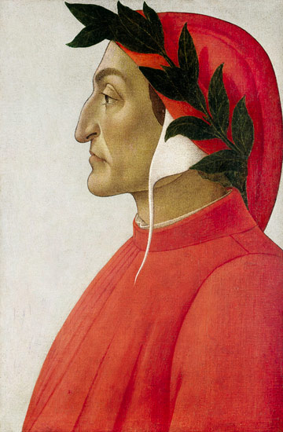

| SU VIDA | |||
|
|||
| SU OBRA | |||
|

|  |
Dante de Botticelli (1495) |
Su juventud Descendiente de una familia de la pequeña nobleza, Dante Alighieri nació en Florencia en la segunda quincena del mes de mayo de 1265. Su madre murió cuando él tenía trece años, y su padre falleció cuando él tenía diecisiete. El acontecimiento más importante de su juventud fue su encuentro, en 1274, con Beatriz, joven mujer a quien amó y exaltó como un símbolo de la gracia divina en la Vita nuova (literalmente, "la Vida Nueva") y más tarde en la Divina Comedia, su obra más conocida. Célebre por ese nombre emblemático, la que inspiró a Dante no posee una identidad histórica concreta, aunque los investigadores la han identificado con Beatriz Portinari, una mujer de la nobleza florentina que murió en 1290 a los veinte años. Si hacemos caso a sus obras, Dante no la conocía; sólo la vio en tres ocasiones y jamás le dirigió la palabra. Se sabe poco sobre la educación que recibió el poeta, sólo que vivió en Bolonia hacia 1285, conde cursó estudios superiores. Sea como fuere, su obra revela una erudición que abarcaba todo el saber de la época. Dante estuvo particularmente influido por los trabajos del filósofo y retórico florentino Brunetto Latini, que ocupa, además, un lugar importante en la Divina Comedia. Tuvo trato con numerosos poetas y se relacionó especialmente con Guido Cavalcanti y Cino de Pistoia. Florencia era por aquél entonces una de las ciudades más influyentes de Italia, pero estaba dividida por conflictos de poder entre los simpatizantes de dos poderosas familias, los güelfos y los gibelinos. Dante fue al principio simpatizante de los güelfos y, en junio de 1289, luchó junto al ejército de los güelfos de Florencia en la batalla de Campaldino. En esta batalla, los florentinos triunfaron de una manera decisiva ante las tropas de los gibelinos de Pisa y de Arezzo, pero los vencedores pronto se dividieron entre "negros" y "blancos" - Dante fue más tarde condenado y desterrado por "blanco". En esta época, Dante se casó con Gemma Donati, que venía de una familia güelfa que gozaba de una posición muy importante en Florencia. |
 |
Dante Alighieri de Agnolo Bronzino (1530) |
Su vida política Durante los años siguientes - de 1295 a 1301, más o menos -, Dante participó activamente en la ajetreada vida política de Florencia; los registros de 1295 indican que ocupó varios cargos en la administración. Fue enviado (1300) en misión diplomática a San Gimignano, pequeño pueblo toscano y, el mismo año, fue elegido para el Consejo con otras cinco personas, en calidad de prior, es decir, de magistrado, pero sólo ocupó este puesto durante dos meses. La rivalidad entre las dos facciones que dividían a los güelfos en Florencia se intensificó durante el periodo de su mandato. Los "negros", contrarios al poder imperial, consideraban al papa como un aliado, mientras que los "blancos" querían ser independientes tanto del papa como del emperador. Para preservar la paz en la ciudad, el Consejo decidió exiliar a los dirigentes de los dos partidos. Pero, gracias a la intervención del papa Bonifacio VIII, los jefes de los "negros" pudieron reconquistar Florencia a finales de 1301, y se hicieron con el poder. En marzo de 1302, mientras el poeta se encontraba en misión en Roma ante el papa, éstos le desterraron de la ciudad por un periodo de dos años y le condenaron a pagar una cuantiosa multa. Como Dante no podía reunir la cantidad exigida, la sanción fue conmutada por pena de muerte si volvía a su ciudad natal. Después de este episodio, a Dante le quedó para siempre el sentimiento de haber sido engañado por Bonifacio VIII. Pasó sus años de exilio en Verona, así como en otras ciudades del norte de Italia, pero se sabe que vivió en París entre 1307 y 1309. Sus convicciones políticas se modificaron: uniéndose finalmente a la causa de los gibelinos, esperaba en lo sucesivo ver emerger una unión europea gobernada por un emperador ilustrado. Las aspiraciones políticas del poeta fueron estimuladas por la llegada a Italia de Enrique VII de Luxemburgo, emperador del Santo Imperio romano germánico (1310), cuyo objetivo era incluir a Italia bajo su soberanía. En este periodo de intensa actividad política, Dante escribió a numerosos príncipes y dirigentes políticos italianos para exhortarles a acoger a Enrique VII, ya que consideraba que la soberanía feudal de éste era el medio para llegar a resolver los graves conflictos entre ciudades. El fallecimiento del emperador, ocurrido en Siena en 1313, dio al traste con todas sus esperanzas. Probablemente fue durante la estancia de Enrique VII en Italia cuando Dante redactó un tratado en latín, la Monarquía (c.1313), que es una exposición de su filosofía política; él aún mantenía la idea de una separación total de la Iglesia y del Estado. |
 |
Dante Alighieri en el exilio de Domenico Pelarlini |
Su exilio En 1316, las autoridades de Florencia propusieron al poeta volver a su ciudad, pero las condiciones que le ofrecían eran las que se reservaban generalmente a los criminales amnistiados. Dante rechazó violentamente esta proposición, afirmando que sólo volvería a su ciudad natal con toda la dignidad y todos los honores que le correspondían. De hecho, alargó su exilio hasta el fin de su vida, y pasó sus últimos años en Rávena, donde murió en la noche del 13 al 14 de septiembre de 1321. Después de esto, Rávena nunca se desprendió de sus restos, pese a la voluntad de los florentinos de verlo enterrado en su ciudad. En su defecto, su ciudad natal erigió en la iglesia de Santa Croce un cenotafio en su memoria. |